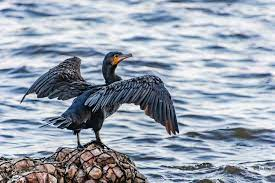

About Bird

Diving birds or diving ducks are a group of aquatic birds found
in various places in North America and southern Eurasia. All
living species of diving birds are members of the genus Gavia, the
family Gaviidae, and the order Gaviiformes, all of which describe
them only.
Diving birds are the size of large ducks or small geese, sometimes
looking similar to both types of animals when they swim. Their
plumage is primarily white and black, with gray on the head and
neck in some species, and white belly feathers. All species of
this genus have spear-shaped beaks.